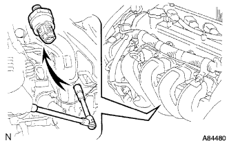
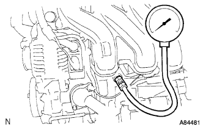

|  |
Engine oil Petitioner Suitsu ASSY
Separate the oil -pledge shinju connector for Suitsui.
Use a deep socket wrench (24mm) to remove the oil pullshiya Suitoshi.
|  |
Oil pressure gauge installation
Attach the pressure gauge via the adapter.
- □ Participation □
Made by Banzai - Automatic transmission oil pressure gauge set [OPG-210]
- Adapter D (OPG-230)
Made of Iyasaka - Automatic transmission oil pressure gauge set [ATG-100]
- Adapter D (ATG-OP20)
Engine warm -up
Oil pressure inspection
- Reference value
At the time of idle rotation 29kpa {0.3kgf/cm2} Or more At 3000R/min 150-550kpa {1.5-5.6kgf/cm2}
Oil pressure gauge removed
 |
Installation of the engine oil Petitioner Suitsui ASSY
Apply Adherive 1324 to the screw.
Use a deep socket wrench (24mm) to attach an oil pouring.
- Reference value
- T = 15 n ・ m {153 kgf / cm}
Connect a connector for oil pouring.
Engine oil leak inspection